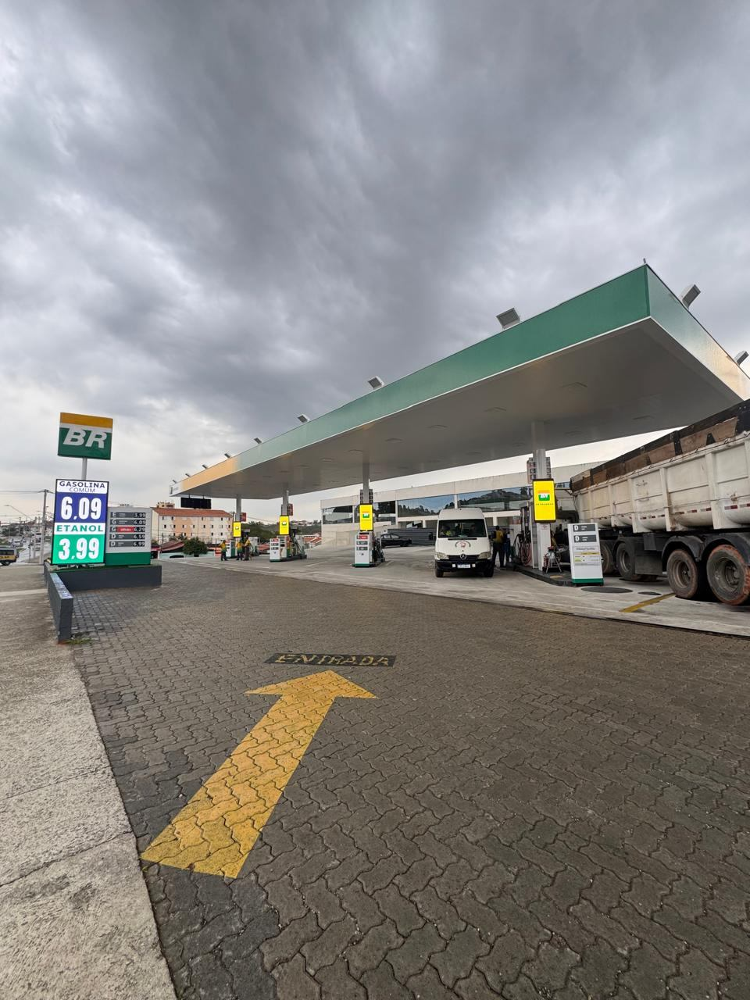
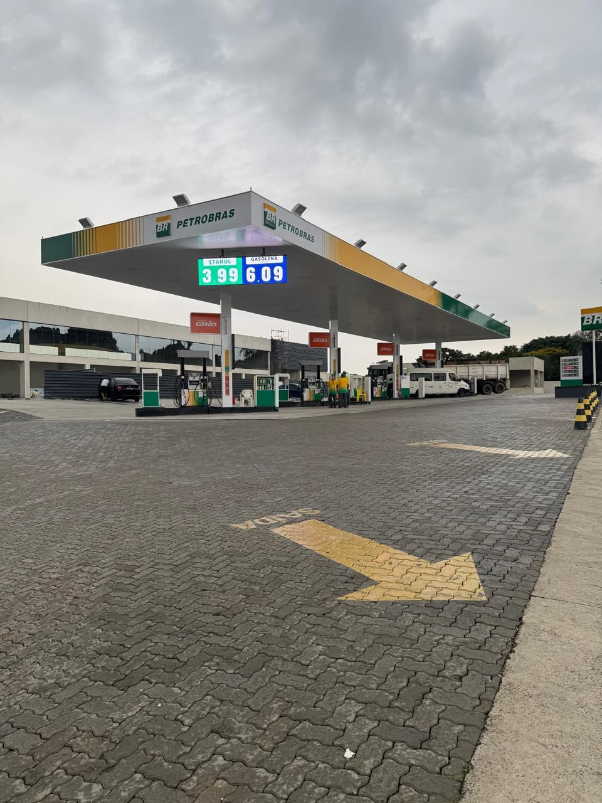
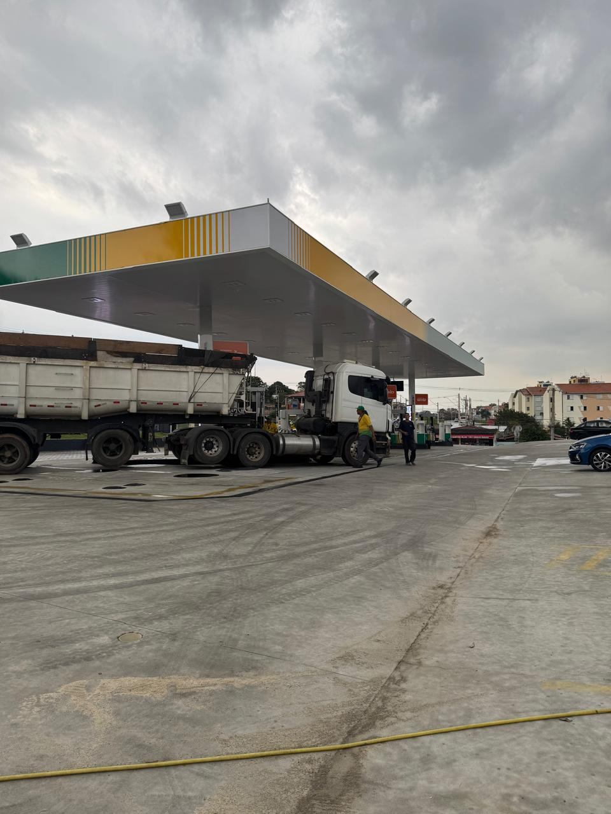
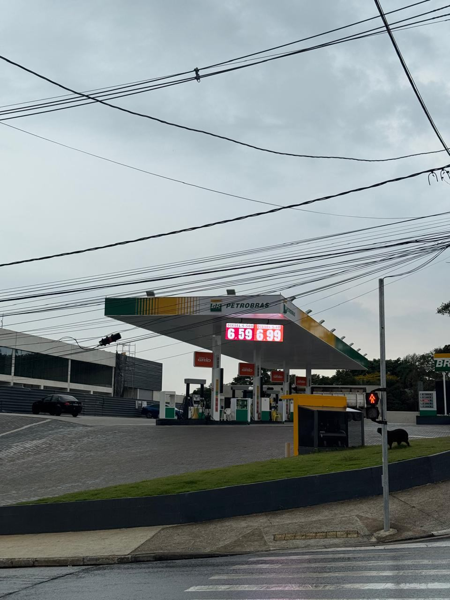
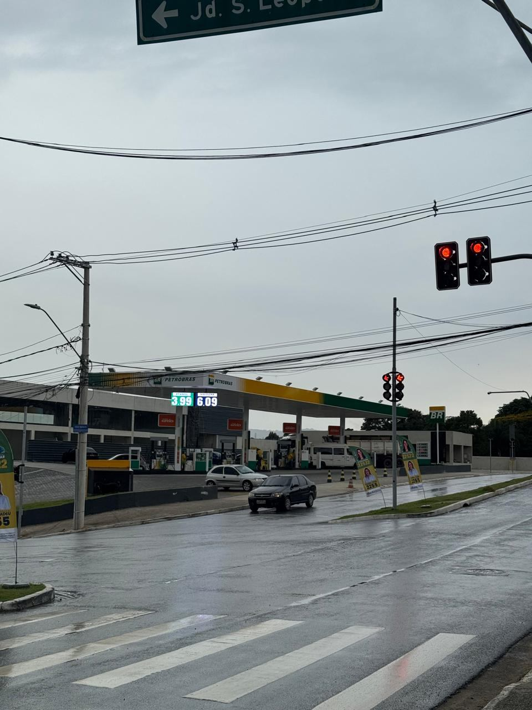
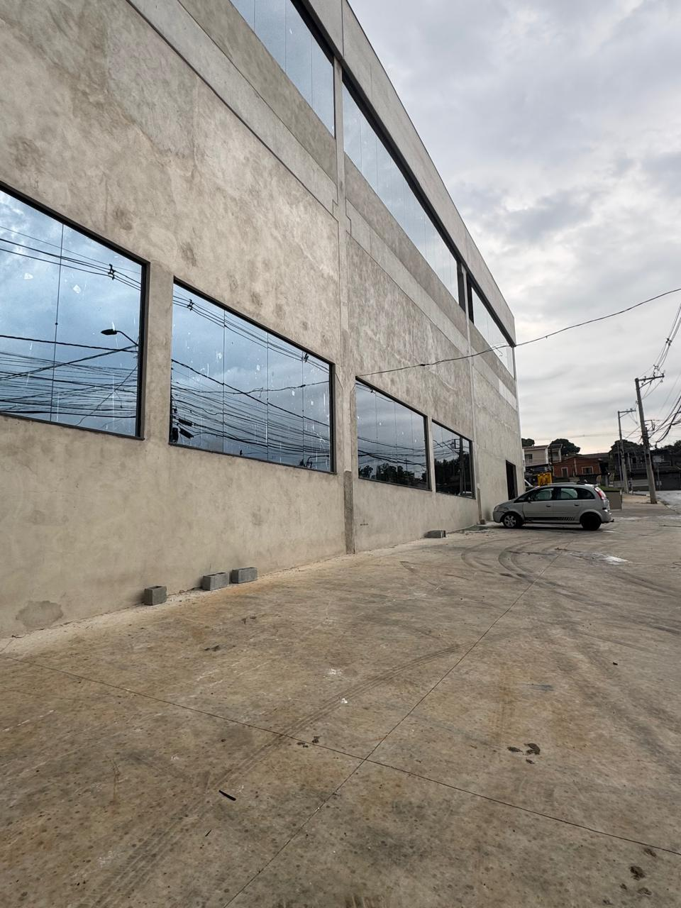
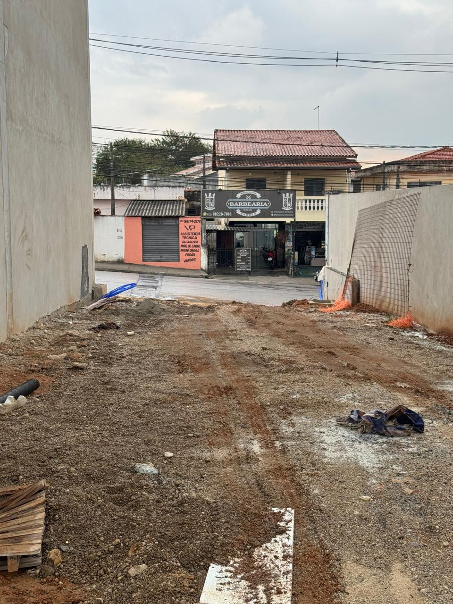
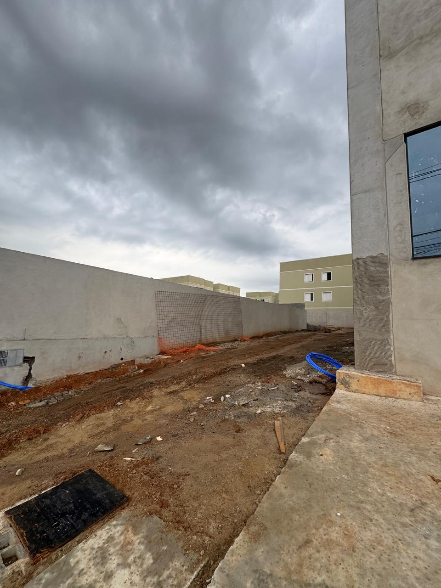

Shell Box
Use o app da Shell para pagar e juntar vantagens nos 5 postos Shell da rede.

A Rede Ypê tem 15 postos Shell, Ipiranga e Petrobras em São José dos Campos, Jacareí, Taubaté e Caçapava.





Confira abaixo o que tem em cada posto (troca de óleo, conveniência, tipos de diesel, gasolina aditivada, lavagem e calibrador de pneu). Busque pelo bairro, filtre por serviço ou toque no Google Maps e Waze para abrir a rota.
Av. Guadalupe, 659 – Jd. América
Av. Guadalupe, 660 – Jd. América
Rua Gisele Martins, 401 – Jd. Morumbi
Rua Sumatra, 315 – Jd. Paraíso
Tv. Constantino Pintos, 44 – Vila Rossi
Av. Eng. Sebastião Gualberto, 700 – Vila Maria
Av. Dep. Benedito Matarazzo, 4229 – Jd. das Indústrias
Rua Profª Maria Siqueira Nathan, 117 – Vila Tesouro
Av. Pedro Friggi, 1001 – Jd. Morotama
Rua Rodolfo Mayer, 10 – Jd. Santa Inês II
Estr. Dom José Antônio do Couto, 2780 – Campos de São José
Av. João Rodolfo Castelli, 1220 – Putim
Av. Maria Augusta Fagundes Gomes, 61 – Res. São Paulo
Estr. do Barreiro, 1972 – São Gonçalo
Av. Brasil, 352 – Vila Antônio Augusto Luiz
Nenhum posto combina com esse filtro. Tente outra região, outro serviço, outra bandeira ou apague a busca.
São 15 postos em quatro cidades do Vale do Paraíba. Doze ficam em São José dos Campos, do Jardim América, na Av. Guadalupe, até o Putim, na Av. João Rodolfo Castelli. Os outros três estão em Jacareí, Taubaté e Caçapava.
Cada posto leva a bandeira de uma distribuidora, Shell, Ipiranga ou Petrobras. A rede tem frota própria, e todos os postos atendem pela mesma central: (12) 97409-6149.
Gasolina, etanol e diesel, conforme o posto e a bandeira.
Café, lanches, bebidas e itens do dia a dia.
Troca de óleo e filtros com o carro parado poucos minutos.
Lavagem do carro enquanto você resolve outras coisas.
Calibrador na pista para conferir a pressão dos pneus.
Ducha para tirar a poeira e o barro do carro.
Os serviços mudam de um posto para outro. Antes de ir, confirme com a central pelo (12) 97409-6149.
Siga a estrada e veja onde a Rede Ypê está. Toque numa região para ver os postos dela.
A região do Putim está recebendo um novo espaço comercial, pensado para reunir diferentes negócios e ampliar as opções de conveniência para quem circula pela região.
Se você tem interesse em conhecer as oportunidades para instalação de uma loja, entre em contato com nossa equipe para saber mais.
Os detalhes do espaço, como tamanho das lojas e prazos, serão divulgados pela Rede Ypê quando estiverem confirmados. Quem deixar o contato abaixo recebe as informações primeiro pela nossa equipe.



Nos postos Ypê você usa o programa de fidelidade da bandeira do posto e conta com a mesma central de atendimento em toda a rede.
Use o app da Shell para pagar e juntar vantagens nos 5 postos Shell da rede.
Junte pontos no programa da Ipiranga nos 2 postos Ipiranga da rede.
Acumule pontos no programa da Petrobras nos 8 postos Petrobras da rede.
Não achou o que procurava? Fale com a central pelo (12) 97409-6149.
A rede tem postos de três bandeiras: 5 Shell, 2 Ipiranga e 8 Petrobras. Cada card na lista de postos mostra o símbolo da bandeira daquele posto.
São 12 postos em São José dos Campos, nas zonas Sul, Norte, Leste e Oeste, e mais 1 em Jacareí, 1 em Taubaté e 1 em Caçapava.
Sim. Nos postos Shell você usa o Shell Box, nos Ipiranga o Km de Vantagens e nos Petrobras o Petrobras Premmia. O cadastro é feito no site ou no app de cada programa.
Não. Os serviços mudam de um posto para outro. Antes de ir, confirme com a central o que o posto que você escolheu oferece.
Na lista de postos, toque no símbolo do Google Maps ou do Waze no card do posto. O app abre com a rota a partir de onde você está.
A central de atendimento ajuda com qualquer posto da rede: endereço, serviços, dúvidas e reclamações.